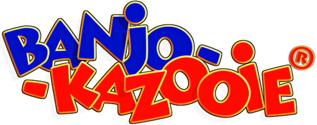
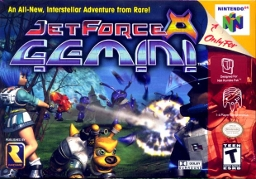
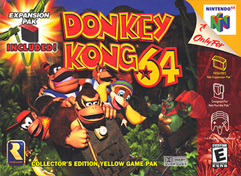
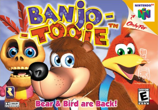

BLOQUE 2 · EL IMPERIO
Rare en N64 · 1996-2001

Blast Corps
1997 · MC 90
1M

GoldenEye 007
1997 · MC 96
8M

Diddy Kong Racing
1997 · MC 88
4.5M

Banjo-Kazooie
1998 · MC 92
3.6M

Jet Force Gemini
1999 · MC 80
1M

Donkey Kong 64
1999 · MC 88
2.5M

Banjo-Tooie
2000 · MC 90
3M

Perfect Dark
2000 · MC 97
2.5M

Conker's BFD
2001 · MC 90
1M
VENDIDOS EN 5 AÑOS
27M
copias en 9 juegos
EL TERCER DEL CATÁLOGO
⅓
de las ventas históricas del N64 entero
2000 · EL TECHO DEL N64
Perfect Dark
El contexto: Perfect Dark obligaba el Expansion Pak — más memoria disponible para audio.
El resultado: Kirkhope y Norgate compusieron una OST con orquestación real, sin las limitaciones del cartucho base. Soundtrack que combina cyberpunk, jazz, ambient.
Por qué importa: marca el techo de lo que el N64 podía hacer sonoramente. Después de Perfect Dark, Rare empezó a mirar a GameCube y Xbox. El N64 ya no daba más.
El resultado: Kirkhope y Norgate compusieron una OST con orquestación real, sin las limitaciones del cartucho base. Soundtrack que combina cyberpunk, jazz, ambient.
Por qué importa: marca el techo de lo que el N64 podía hacer sonoramente. Después de Perfect Dark, Rare empezó a mirar a GameCube y Xbox. El N64 ya no daba más.